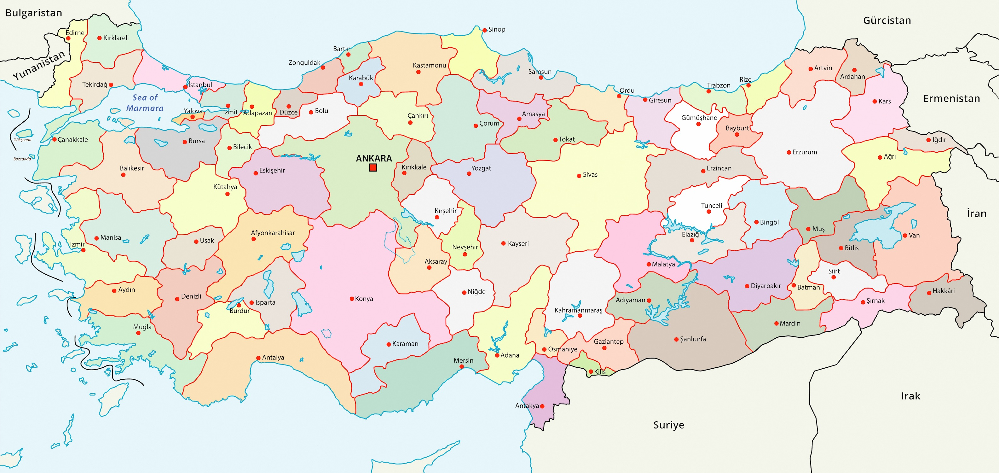

Gezgin Satıcı Problemi Çözücü
Çoklu şehirler arasında en kısa rotayı bulun!
TÜRKİYE HARİTASI

Şehir Seçimi
Başlangıç Şehri:
Şehir1 Adı:
Yeni Şehir Ekle
Son Şehri Sil
Rotayı Hesapla
En Kısa Rota
Toplam Mesafe
Detaylı Mesafeler